Jurnal Eropa · Hari 4 dari 16
Pagi terakhir di Praha,
siang di Krumlov
Tujuh belas derajat, matahari baru naik di ujung jalan, dan trotoar yang masih kosong. Sebelum koper masuk bagasi dan mobil diarahkan ke selatan, kami curi satu jam untuk jalan kaki keliling kampung sendiri — lalu sarapan dengan menu yang paling tidak Eropa.
Bangun sebelum kotanya bangun
Žižkov, Praha 3
Ini pagi terakhir kami di Praha, dan sayang kalau dihabiskan di dalam kamar. Jadi sebelum yang lain siap-siap, saya dan Amelia keluar jalan kaki. Suhunya 17 derajat — semriwing, kata orang Jawa. Untuk kami yang datang dari Tangerang, ini suhu yang bikin jalan kaki terasa seperti hadiah, bukan olahraga.

Kawasan Žižkov pagi hari itu tenang sekali. Tidak ada turis, tidak ada antrean, tidak ada orang menawarkan tiket kapal. Yang ada cuma deretan mobil parkir, rel tram yang masih diam, dan orang-orang lokal berangkat kerja sambil menunduk ke ponsel. Ini wajah kota yang tidak akan kamu lihat kalau baru keluar hotel jam sembilan.


Cahaya jam tujuh pagi bikin fasad gedung yang biasa saja jadi kelihatan mahal.
Matahari terbit di ujung jalan
Hal gratis yang paling bagus hari ini
Praha di bulan Agustus matahari terbitnya menjelang jam enam, dan efeknya luar biasa: jalanan lurus yang menghadap timur berubah jadi lorong cahaya. Kami cuma berdiri di tengah jalan — yang di jam segini masih aman — dan memotret. Tidak perlu tiket, tidak perlu naik menara.


Bunga di pinggir jalan
Yang bikin jalan pagi jadi lama
Rencananya jalan sebentar saja. Yang bikin molor: bak-bak tanaman di pinggir trotoar yang isinya bukan tanaman hias formal, tapi bunga-bunga campur — zinnia oranye, cosmos merah muda, dan entah apa lagi. Amelia berhenti di tiap bak. Saya berhenti karena dia berhenti.


Bak bunga di trotoar itu ternyata program penghijauan kota. Sederhana, murah, dan efeknya langsung terasa.


Duduk sebentar di taman, matahari di belakang. Ini bagian yang tidak ada di itinerary mana pun.
Sarapan paling Indonesia di Eropa
Dapur apartemen, Žižkov
Pulang jalan, perut minta diisi. Dan menu paginya bukan croissant, bukan roti dengan keju — tapi Indomie pakai telor. Kami memang bawa beberapa bungkus dari rumah, dan ini salah satu keputusan terbaik yang kami buat sebelum berangkat.


Ini juga alasan kenapa sejak awal kami pilih apartemen berdapur, bukan kamar hotel biasa. Bisa masak sendiri artinya: sarapan gratis, sarapan sesuai selera, dan tidak perlu keluar mencari tempat makan yang jam bukanya belum tentu cocok dengan jam berangkat kami.
Setelah itu tinggal beres-beres: koper masuk bagasi, kunci apartemen dikembalikan, dan mobil diarahkan ke selatan. Tujuan berikutnya Český Krumlov — kota kecil di tikungan sungai yang katanya seperti Praha versi mini.
Turun ke selatan, sampai di Krumlov
Praha → Český Krumlov · sampai tengah hari
Setelah Praha yang besar dan ramai, Český Krumlov terasa seperti kebalikannya: kota kecil yang seluruh pusatnya muat dijalani kaki, melingkar di dalam tikungan tajam Sungai Vltava. Kami sampai sekitar tengah hari.
Urutan pertama yang kami lakukan bukan jalan-jalan, tapi menaruh mobil dulu. Kami menginap di apartemen yang dipesan lewat Airbnb di T. G. Masaryka 192, Český Krumlov 1-Latrán — dan ini keputusan yang ternyata sangat menguntungkan: dari sana jalan kaki sepuluh menit sudah sampai ke area wisata. Mobil tidak perlu disentuh lagi sampai besok pagi.
Kota di dalam tikungan sungai
Jalan berbatu, atap merah, satu kastil di atas
Begitu masuk pusat kota, jelas kenapa tempat ini masuk daftar UNESCO. Jalanan berbatu sempit, rumah-rumah beratap genteng merah yang berdempetan, dan di atas semuanya menara kastil dengan cat warna-warni yang kelihatan dari hampir setiap sudut.


Kiri: jalan utama menuju kastil. Kanan: pemandangan dari jembatan — kastil di atas, orang berperahu karet di bawah.
Sungainya bukan cuma pemandangan. Sepanjang siang ada saja rombongan yang menyusurinya: perahu karet yang didayung sendiri, dan rakit kayu besar yang didorong pakai galah — versi santai untuk yang tidak mau basah.

Tujuh ratus tahun di satu tikungan
Sedikit sejarah, supaya jalan-jalannya lebih berarti
Nama Krumlov datang dari bahasa Jerman Krumme Aue — "padang berkelok". Dan memang itu inti kotanya: Vltava di sini membuat dua tikungan tajam seperti huruf S, dan lekukan itulah yang dulu jadi benteng alami. Kota tua praktis dikelilingi air di tiga sisi, dan kastilnya berdiri di tebing batu di seberang. Kata Cesky artinya "Bohemia", untuk membedakannya dari Moravsky Krumlov.
Kastilnya mulai dibangun sekitar 1240 oleh keluarga Vitkovci. Lalu diwarisi wangsa Rozmberk yang berkuasa dari 1302 sampai 1602 — merekalah yang mengubahnya dari benteng jadi istana Renaissance, lengkap dengan lukisan sgraffito di dindingnya. Pewaris terakhir mereka, Petr Vok, terlilit utang dan menjual kota ini kepada Kaisar Rudolf II. Setelahnya jatuh ke keluarga Eggenberg, lalu Schwarzenberg yang memegangnya dari 1719 sampai disita negara pada 1947.
Ini kompleks kastil terbesar kedua di Ceko setelah Kastil Praha — sekitar empat puluh bangunan jadi satu. Dua hal paling istimewa di dalamnya: teater barok tahun 1766 yang mesin panggung kayunya masih asli dan masih berfungsi, salah satu dari hanya dua di dunia; dan beruang yang benar-benar dipelihara di parit kastil sejak abad ke-16, tradisi peninggalan Rozmberk yang diteruskan sampai hari ini.
Yang menarik justru bagian akhirnya. Setelah Perang Dunia II penduduk berbahasa Jerman diusir, dan sepanjang era komunis kota ini dibiarkan membusuk — rumah kosong, cat mengelupas, tidak ada dana perbaikan. Tapi penelantaran itulah yang menyelamatkannya: tidak ada yang membongkar, tidak ada yang membangun ulang dengan beton. Setelah 1989 kota direstorasi, dan pada 1992 masuk daftar Warisan Dunia UNESCO. Pelukis Egon Schiele sempat tinggal di sini pada 1911 — ibunya orang Krumlov — sampai akhirnya diusir warga karena gaya hidupnya dianggap terlalu skandal.
Makan siang di tepi sungai
Papa's Living Restaurant · Latrán 13
Karena baru sampai dan lapar, kami tidak riset panjang: masuk ke Papa's Living Restaurant di Latrán 13, yang terasnya persis menghadap sungai. Pemandangannya memang juara — deretan rumah kayu tua di seberang, air mengalir di bawah meja.


Dari pintu di jalan Latrán, terasnya turun ke tepi sungai. Pizza, lasagne, dan řízečky sudah di meja.
Soal harga, mari jujur saja: lumayan mahal. Tapi ini memang harga tempat wisata, dan kami sadar itu sejak duduk. Totalnya 1.312 CZK untuk berempat:

Satu hal yang perlu diingat di Ceko dan tercetak jelas di struk ini: service belum termasuk. Tip bukan wajib, tapi membulatkan ke atas atau meninggalkan 10 persen itu kebiasaan yang normal di restoran seperti ini.
Ada satu angka lagi di kaki struk yang layak dibaca pelan-pelan. Di bawah Celkem 1312,00 tercetak baris kedua: 64,00 EUR. Itu kurs restorannya sendiri, dan kalau dihitung balik ketemu sekitar 20,5 koruna per satu euro — padahal kurs pasarannya waktu itu di kisaran 24 sampai 25.
Ini bukan kesalahan restorannya — banyak tempat di negara non-euro memang mencantumkan harga euro sebagai kemudahan, dengan kurs yang mereka tentukan sendiri. Yang jadi urusan kita cuma satu: bayar dalam mata uang setempat, dan tolak kalau mesin kartunya menawarkan konversi ke rupiah atau euro di layar.
Naik ke kastil
Halaman gratis, pemandangan gratis
Selesai makan, kami naik ke kompleks kastil. Seperti di Praha, pelajarannya sama: halaman-halaman kastil dan jalur lewatnya bisa dimasuki tanpa tiket. Yang berbayar itu interior — kamar-kamar Renaissance, museum, dan naik ke menara. Ada peta besar di dekat pintu masuk yang memperjelas mana yang mana.


Baca petanya dulu sebelum beli tiket — banyak bagian terbaiknya justru tidak perlu tiket.


Menara kastil dengan cat pastelnya itu penanda kota — dari mana pun kamu berdiri, dia kelihatan.

Pemandangan terbaik hari ini
Teras pandang di jalur kastil
Puncaknya ada di teras pandang di jalur kastil: seluruh kota tua terhampar di bawah — atap merah rapat-rapat, kelokan Vltava, bendungan kecil yang airnya berbusa putih, dan perbukitan hijau di kejauhan. Ini gratis, dan menurut kami inilah pemandangan terbaik Krumlov.


Kalau cuma punya satu jam di Krumlov, habiskan di sini.
Turun lagi, pelan-pelan
Keramik, tepi sungai, dan kaki yang direndam
Turun dari kastil, kami masuk-masuk toko kecil. Yang paling menarik: keramik buatan tangan — lonceng, rumah-rumahan, dan patung malaikat kecil, semuanya dicat manual. Harganya masuk akal untuk oleh-oleh, dan tidak terasa seperti barang pabrik.


Penutupnya paling sederhana dan paling enak: duduk di tepian batu di pinggir sungai dan merendam kaki. Airnya dingin, arusnya pelan, dan setelah seharian jalan kaki ini terasa seperti perawatan mahal yang kebetulan gratis.


Rumah nomor 192
Penginapan yang jadi alasan kami betah
Tempat menginap kami di Český Krumlov namanya Villa Harmony, T. G. Masaryka 192, kawasan Latrán. Dari luar tidak ada tanda-tanda ini penginapan: dinding krem kasar, pintu kayu cokelat tua, dan angka 192 di atas pintu lengkung. Tidak ada lobi, tidak ada resepsionis. Cuma papan kecil di pagar dan sederet bel di tembok.
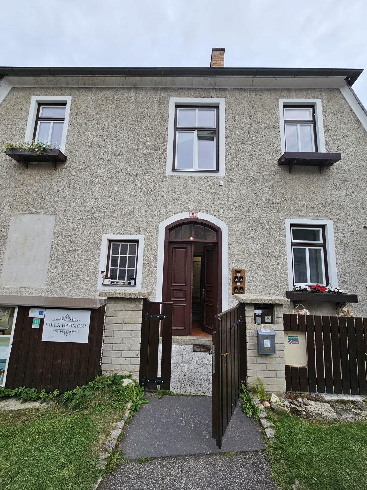
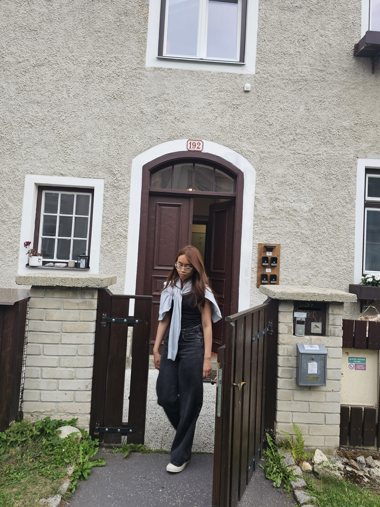
Dari gerbang ini, sepuluh menit jalan kaki sudah sampai di kaki kastil. Tidak perlu tram, tidak perlu taksi.
Harganya sekitar Rp3,2 juta semalam — angka yang bikin mikir dua kali waktu booking. Setelah masuk, kami tidak mikir lagi. Apartemennya luas, dua kamar tidur terpisah, jadi tidak ada yang harus tidur di sofa atau berbagi kamar dengan orang yang ngoroknya juara.
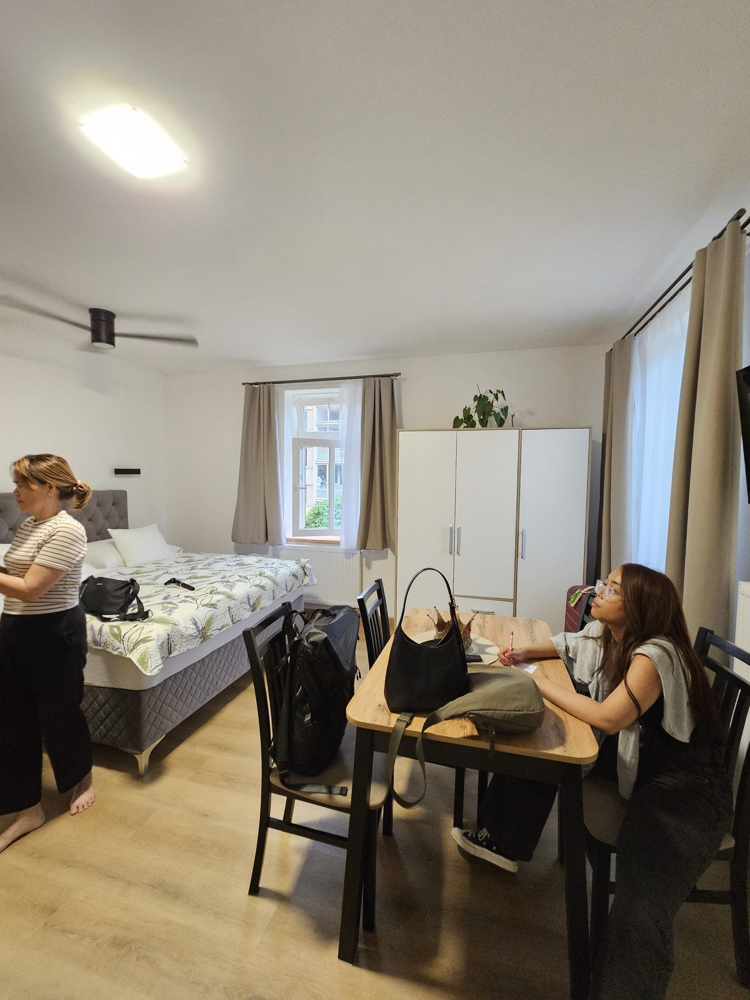
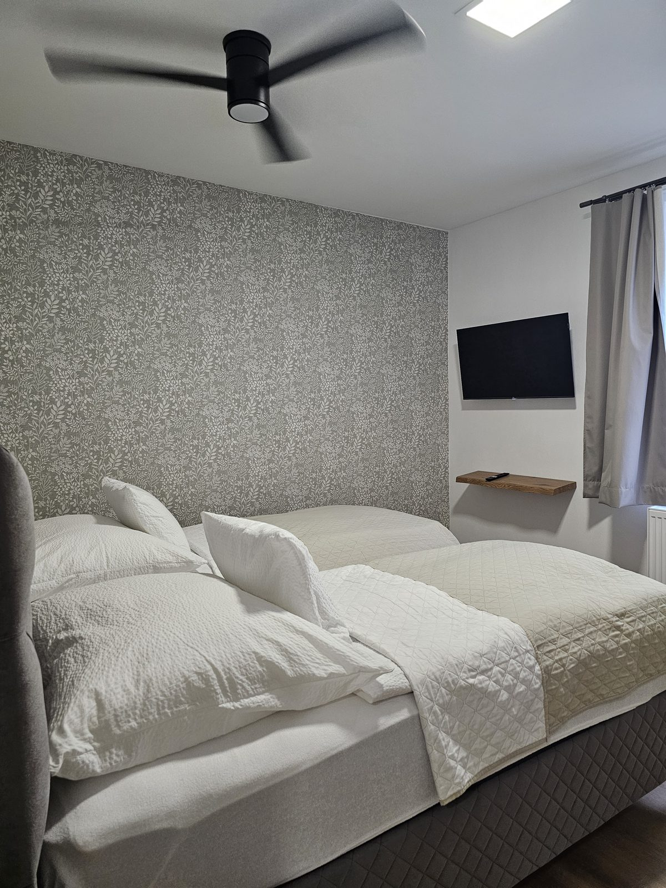
Dua kamar, empat orang, nol drama rebutan kasur.
Fasilitasnya lengkap sampai ke hal-hal kecil yang baru terasa gunanya kalau sedang jalan panjang: dapur dengan kompor dan oven, mesin kopi, mesin cuci di kamar mandi, dan shower air panas yang tekanannya benar. Di hari keempat perjalanan, mesin cuci itu nilainya lebih tinggi daripada kolam renang.
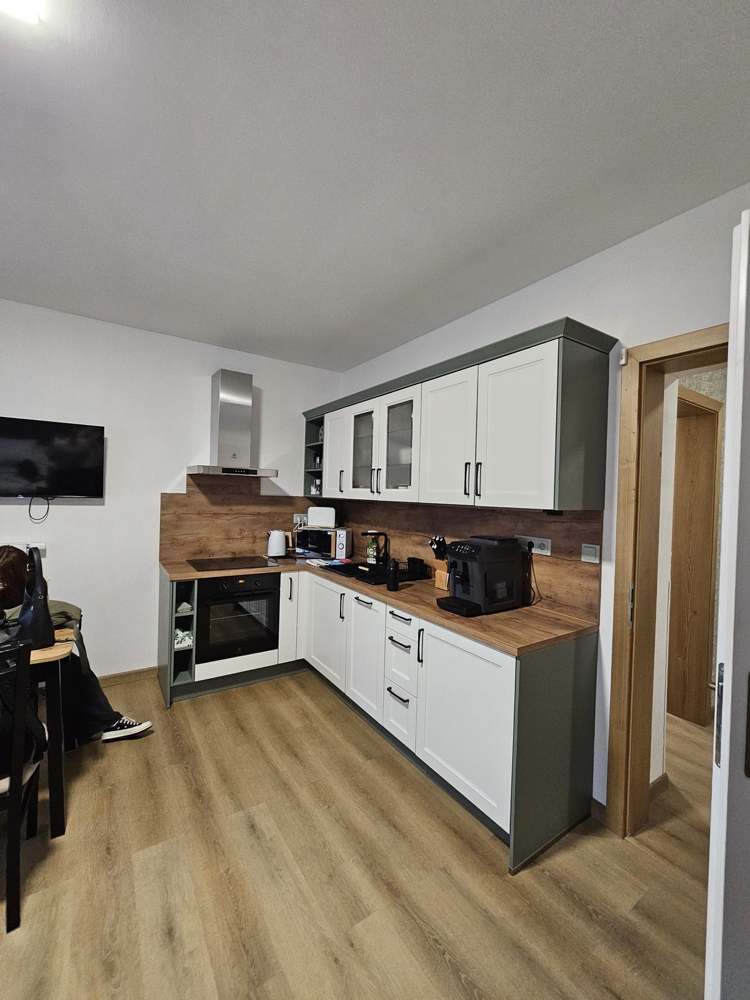
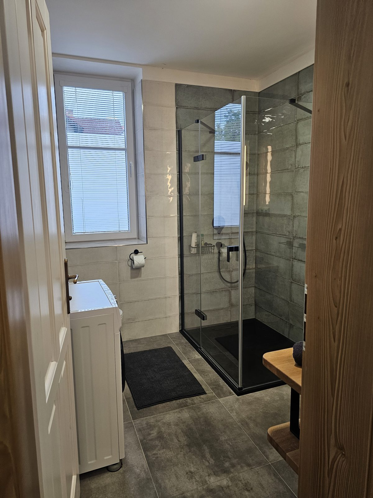
Dapur buat masak sarapan, mesin cuci buat baju empat hari. Dua-duanya lebih kepakai daripada yang diduga.
Drama garasi, dan host yang langsung datang
Bagian yang paling bikin kami ingat tempat ini
Satu-satunya yang sempat bikin panik: tempat parkir di garasi. Kota tua Eropa itu jalannya sempit, garasinya sempit, dan mobil kami station wagon. Sempat ada masalah soal garasi mana yang boleh kami pakai — dan sejujurnya di titik itu kami sudah siap parkir jauh lalu jalan kaki sambil seret koper.
Kami kabari hostnya. Tidak pakai lama, hostnya datang sendiri ke lokasi, dibantu sampai mobil benar-benar masuk dan beres. Ramah sekali, tidak ada nada terganggu sama sekali. Ini hal yang tidak kelihatan di foto listing, tapi paling menentukan rasanya menginap.
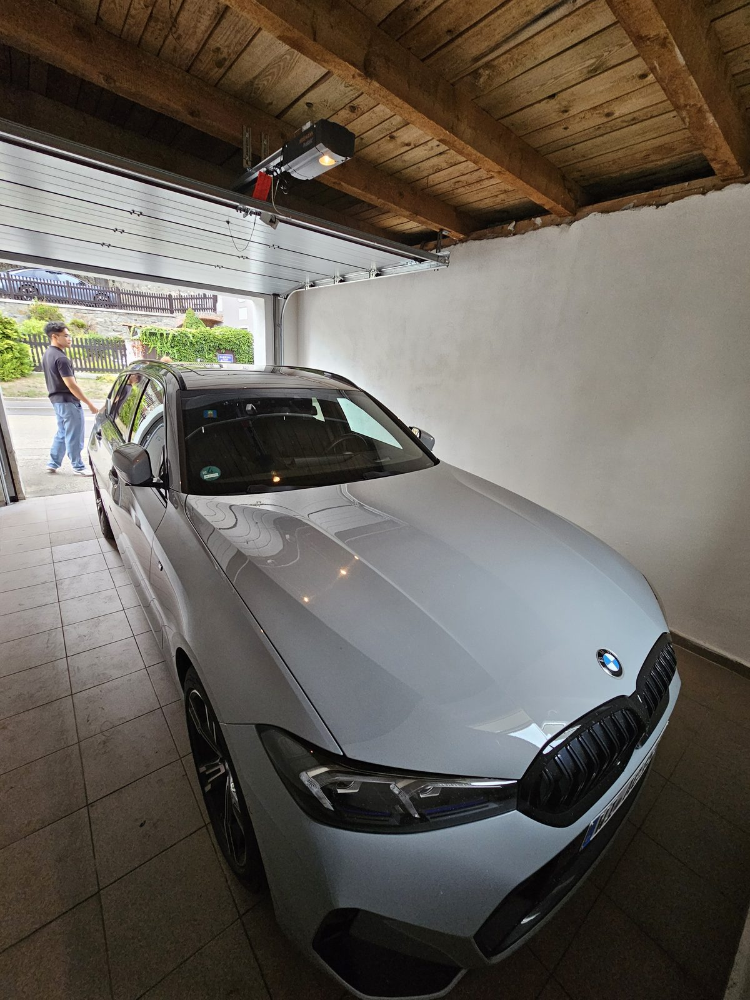
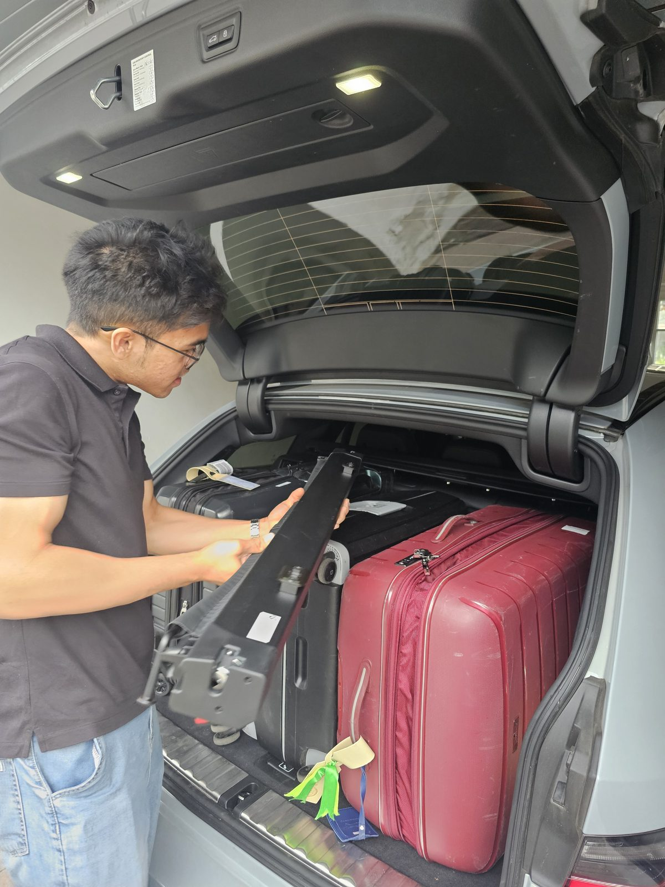
Pas, tapi masuk. Dan setelah mobil aman di dalam, sisa hari itu tinggal jalan kaki.
Catatan buat yang road trip: di kota tua seperti Český Krumlov, parkir itu masalah nyata — banyak zona terlarang dan tarif per jam. Pastikan penginapanmu punya garasi atau parkir sendiri, tanyakan sebelum booking, dan simpan nomor host yang bisa dihubungi cepat.
Makan malam di My Saigon
700 koruna berempat, dan itu bukan salah ketik
Makan siang tadi di restoran tepi sungai habis 1.312 CZK. Malamnya kami cari yang lain, dan ketemu My Saigon — restoran Vietnam di gang kecil, papan namanya sederhana, mejanya kayu panjang di luar. Total tagihan berempat: sekitar 700 CZK. Setengahnya makan siang, untuk porsi yang lebih banyak.
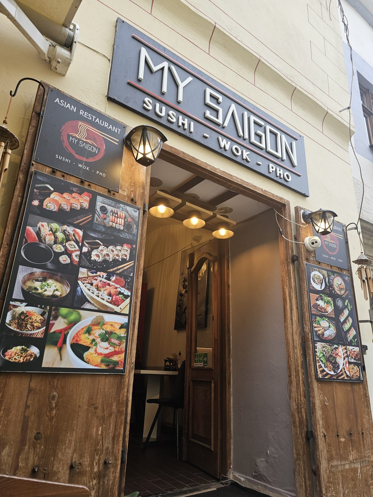
Yang datang: semangkuk pho berkuah panas dengan irisan daging dan tauge, nasi goreng seafood sepiring besar, dan satu set bento dengan sushi dan gorengan. Buat lidah Indonesia yang tiga hari ini lebih sering ketemu roti, keju, dan daging panggang, kuah kaldu panas plus nasi itu rasanya seperti pulang sebentar.
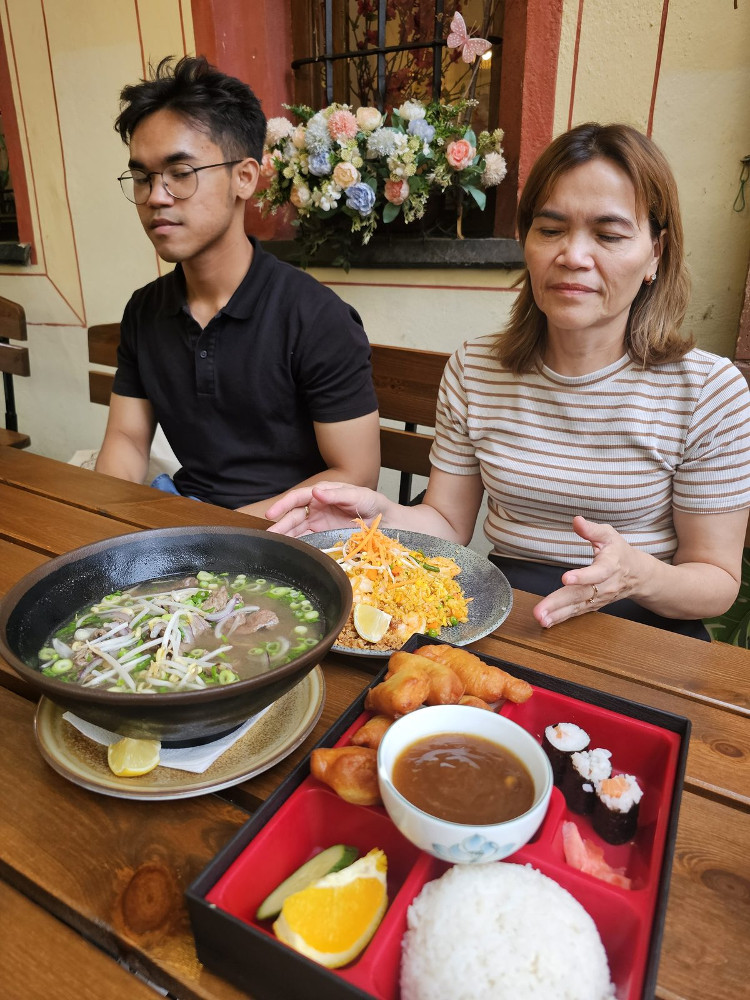
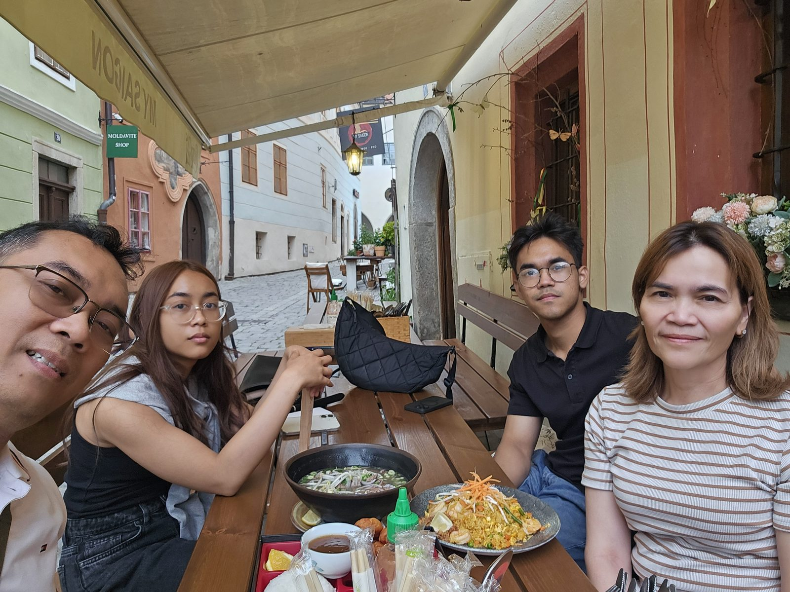
Makan di gang, di bawah tenda, dengan jalan berbatu di sebelah. Suasananya malah lebih enak daripada restoran yang mahal tadi siang.
Sisa sore di tepi Vltava
Yang tidak direncanakan tapi paling diingat
Sebelum malam, kami sempat nongkrong lama di jembatan kayu yang menghadap kastil. Di bawah, rakit-rakit kayu berisi turis lewat pelan-pelan, dipandu satu orang bergalah. Tidak ada yang buru-buru. Kami cuma bersandar di pagar, memotret, dan membiarkan sore lewat.
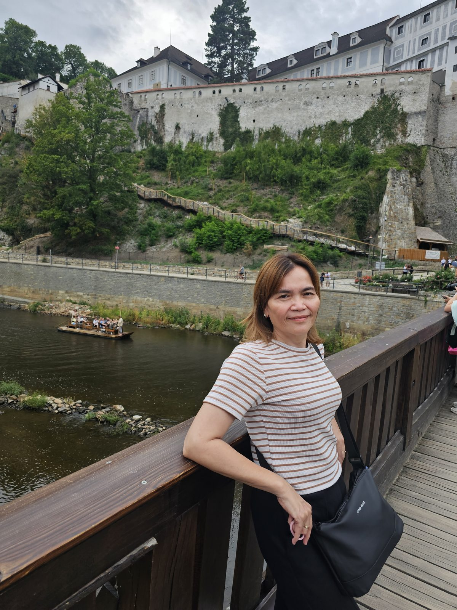
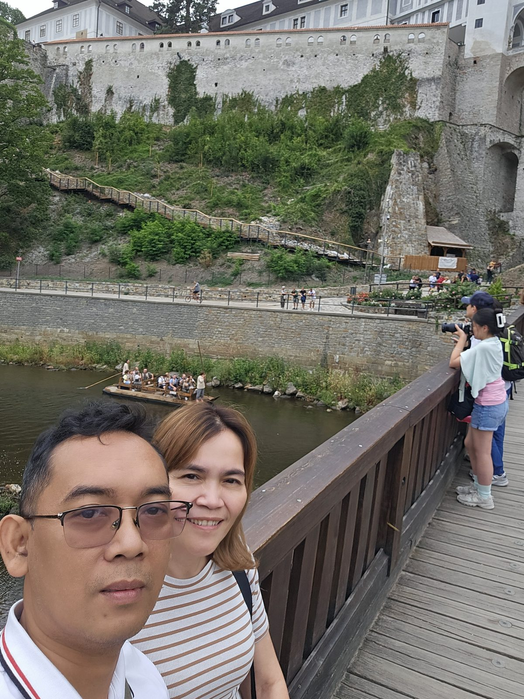
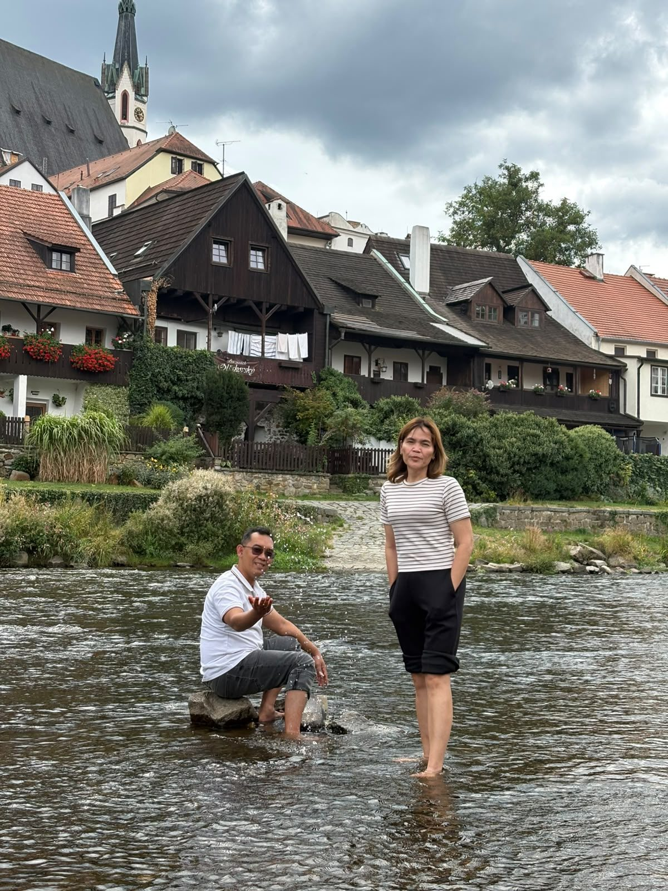
Dan seperti biasa, hal paling menyenangkan datang tanpa diminta: seekor anjing keriting besar berhenti di depan kami di halaman kafe, lalu dengan santai membiarkan dirinya dielus rame-rame. Pemiliknya cuma tersenyum. Lima menit itu tidak masuk itinerary mana pun.
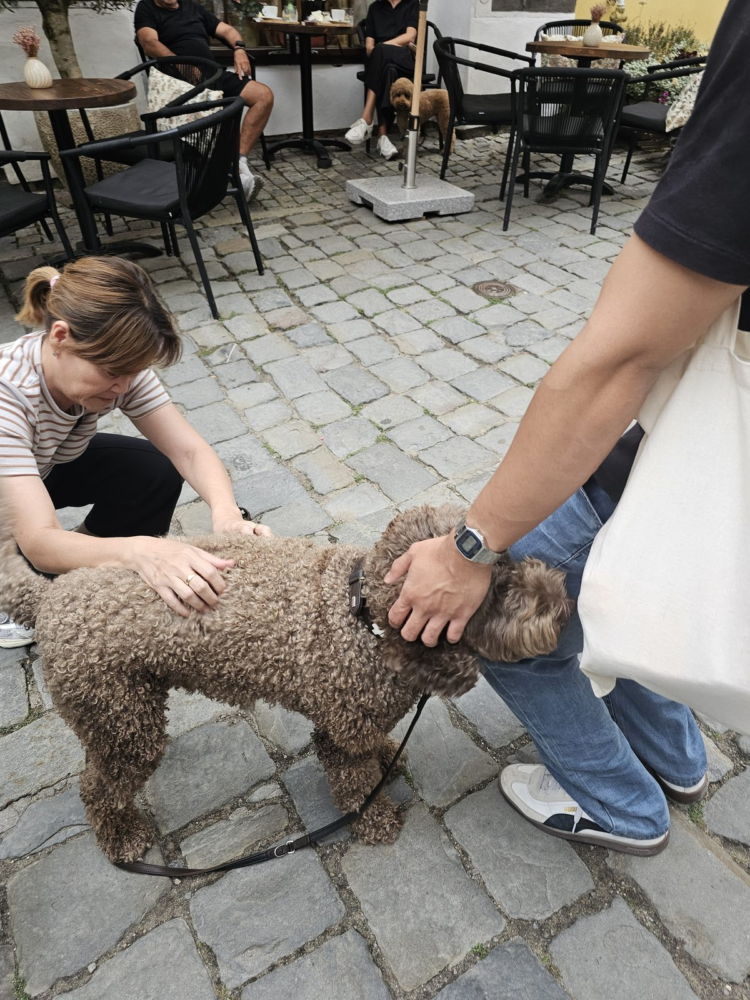
Malamnya kami tidur cepat. Besok pagi jam sepuluh mobil harus jalan lagi — Český Krumlov cuma kebagian setengah hari dari kami, dan rasanya masih kurang.
Buat yang mau bikin trip serupa
- Cari penginapan yang jalan kaki ke pusat kota. Apartemen kami di Latrán cuma sepuluh menit jalan kaki dari objek wisata — mobil ditaruh sekali, tidak disentuh lagi sampai besok. Di kota tua sesempit Krumlov, ini jauh lebih waras daripada bolak-balik cari parkir.
- Setengah hari itu cukup untuk melihat, tapi kurang untuk menikmati. Kalau bisa, menginap semalam seperti kami — sore dan pagi harinya jauh lebih sepi dibanding jam rombongan tur siang.
- Harga makan di area wisata memang lebih mahal. Makan siang berempat di restoran tepi sungai habis 1.312 CZK. Anggap saja bayar pemandangan; kalau mau hemat, cari yang agak menjauh dari Latrán.
- Bayar dalam mata uang setempat, bukan euro. Struk makan siang kami mencetak 1.312 CZK dan di bawahnya 64,00 EUR — kurs restorannya sendiri, sekitar 20,5 koruna per euro, sementara kurs pasaran waktu itu 24–25. Selisihnya hampir dua puluh persen. Aturan yang sama berlaku di mesin kartu: kalau layarnya menawarkan menagih dalam rupiah atau euro, pilih mata uang setempat.
- Ingat: service tidak termasuk. Di struk Ceko biasanya tercetak jelas. Membulatkan ke atas atau 10 persen sudah cukup sopan.
- Halaman kastil dan teras pandangnya gratis. Yang berbayar cuma interior, museum, dan menara. Baca dulu papan peta di dekat pintu masuk sebelum memutuskan beli tiket.
- Teras pandang di jalur kastil itu wajib. Panorama atap merah dan kelokan Vltava dari sana adalah gambar yang selama ini kamu lihat di internet — dan tidak perlu bayar untuk mendapatkannya.
- Sungainya bisa dinaiki. Perahu karet untuk yang mau aktif, rakit kayu bergalah untuk yang mau santai. Sediakan waktu setengah hari kalau tertarik.
- Bawa alas duduk tipis. Tepian batu di pinggir sungai adalah tempat istirahat terbaik di kota ini, dan merendam kaki di Vltava itu gratis.
- Cari keramik buatan tangan untuk oleh-oleh. Lebih berkarakter daripada suvenir cetakan, dan harganya tidak jauh berbeda.